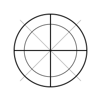

COLOPHON
THE
OBJECT
What this publication is made of, and what it deliberately is not.
TYPEFACES
Anton (heavy condensed display), Oswald (condensed headings), Old Standard TT (nineteenth-century Russian-style serif, for pull quotes and captions), Source Serif 4 (reading text), Special Elite (typewriter), Caveat (hand annotations, Latin and Cyrillic) and IBM Plex Mono (data). Anton, Oswald, Old Standard TT, Source Serif 4, Caveat and IBM Plex Mono are licensed under the SIL Open Font License 1.1; Special Elite is licensed under the Apache License 2.0. All are served from this repository, with licence texts in assets/fonts/.
MATERIALS
Every photograph in this edition is a separate derivative file, not a CSS filter: each has its own crop, its own degradation (photocopy threshold and toner streaks, halftone screen, newsprint dither, faded print with scanner banding, deep black, underexposed) and, where it is a loose sheet, a torn edge baked into the alpha channel. Seven material textures — concrete, granite, newsprint, linen, soot, wet plaster and grease-stained manila — were generated procedurally for this edition, together with the paper and dust overlays of the first edition. Text sheets are torn by seeded fractal outlines computed at build time, so no two sheets share an edge. Scripts: build/make_derived.py, build/build.mjs.
Photographs and reproductions come from Wikimedia Commons under public domain, CC0, CC BY or CC BY-SA licences. Every file is credited under its figure and in the bibliography. Every derivative is declared in the bibliography and in ASSET_CREDITS.md and inherits the licence of its original; the original author is credited under each figure, and each figure has an EXAMINE ORIGINAL control that opens the unprocessed file.
TECHNICAL
Static HTML, CSS and vanilla JavaScript. No frameworks, no build step at runtime, no external requests, no cookies, no analytics, no backend. The site is generated from files in data/ by build/build.mjs and can be served from any static host, including GitHub Pages.
Interactions: the catalogue, the map, the chronology filter, the image examination dialog, cross-references and hidden marginalia. All are operable by keyboard; motion is disabled under prefers-reduced-motion.
EDITORIAL LIMITS
This is a first edition. It does not survey the Russian funeral industry, regional variation at the scale of a province, or the post-Soviet digital memorial. It does not quote laments, proverbs or epitaphs verbatim. It does not treat ‘Russian’ as a synonym for East Slavic. The gaps are listed in the plates where they occur.
LICENSING
The atlas’s original text, data, diagrams and generated textures are released under CC BY-SA 4.0. Third-party images retain the licences recorded in the bibliography and in ASSET_CREDITS.md. Derived images of CC BY-SA photographs remain CC BY-SA.
